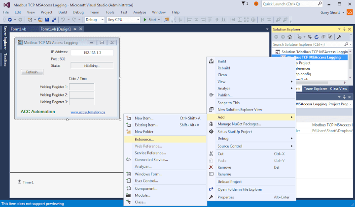
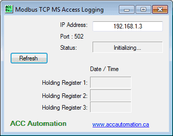
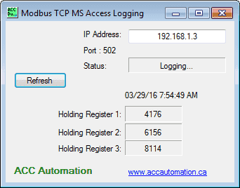
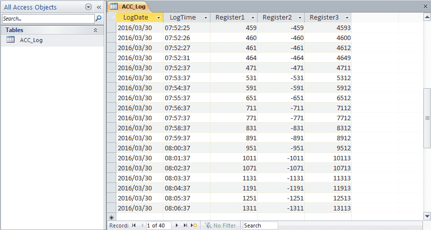

Используя Visual Basic 2015, можно внести в базу данных Microsoft Access данные о трех регистрах хранения с ПЛК, а также время и дату. Мы будем ежеминутно вносить в базу данных информацию, которую мы собираем с ПЛК через Modbus TCP (Ethernet). Весь код будет выполнен и показан, чтобы вы могли реализовать его в своем приложении с различными параметрами. Информация, собранная в базе данных, может быть распространена или проанализирована в будущем.
Visual Basic 2015 будет использоваться с клиент-серверной библиотекой EasyModbusTCP для .net. Мы будем взаимодействовать с ПЛК системы автоматизации Direct – Do-More. Используя бесплатное программное обеспечение для моделирования PLC Designer Software, мы получим три значения из регистров хранения Modbus, используя протокол Modbus TCP. Как только мы получим эту информацию из программируемого логического контроллера, она будет помещена в базу данных Microsoft Access (2010). Это будет сделано с помощью SQL-команды для вставки данных.
В Automation Direct есть мощный тренажер с ПЛК Do-More. Программное обеспечение для ПЛК можно бесплатно скачать на сайте Automation Direct.
Мы начнем с программы ПЛК. Будут использоваться первые три регистра хранения. В ПЛК Do-More это будут MBR1, MBR2 и MBR3. Это будет соответствовать регистрационным номерам 40001, 40002 и 40003. Ниже приведена таблица со всеми ссылками на Modbus-соединения для Do-More.
|
Coil/Register Numbers |
Data Addresses |
Type |
Do-More PLC |
Table Name |
|
00001-09999 |
0000 to 270E |
Read-Write |
MC1 to MC1023 |
Discrete Output Coils |
|
10001-19999 |
0000 to 270E |
Read-Only |
MI1 to MI1023 |
Discrete Input Contacts |
|
30001-39999 |
0000 to 270E |
Read-Only |
MIR1 to MIR2047 |
Analog Input Registers |
|
40001-49999 |
0000 to 270E |
Read-Write |
MHR1 to MHR2047 |
Analog Output Holding Registers |
Примечание: ПЛК Do More использует для обмена данными область Modbus. Это связано с тем, что прямой доступ к цифровому вводу-выводу может быть опасным при подключении через Ethernet к Интернету. Данные должны поступать в эту область и выходить из нее с помощью программы ПЛК.
Вот программа ПЛК, которая устанавливает три регистра.

Следующее, что нам нужно сделать, это настроить нашу базу данных Microsoft Access 2010. Наша база данных будет называться ACC_Database и будет расположена по следующему адресу: “C:\AccLog”. У нас будет одна таблица с именем ACC_Log. В таблице у нас будет пять полей: LogDate, LogTime, Register1, Register2, Register3.
Visual Basic 2015 является бесплатным и входит в состав Visual Studio 2015. Его можно загрузить по следующему адресу: https://www.visualstudio.com/en-us/products/visual-studio-community-vs
EasyModbusTCP - это бесплатная программа. Ссылка на нее будет указана в нашей программе visual basic. Ее можно загрузить по следующему адресу: https://sourceforge.net/projects/easymodbustcp/
После загрузки вы должны извлечь файлы.
EasyModbusTCP - это клиент-серверная библиотека Modbus TCP, Modbus UDP для .NET и клиентская библиотека для JAVA. Клиент-сервер .NET (.dll) также поддерживает Modbus RTU. Он поддерживает следующие функциональные коды: – Считывание катушек (FC1)
– Считывание дискретных входов (FC2)
– Считывание регистров удержания (FC3)
– Считывание входных регистров (FC4)
– Запись в одну катушку (FC5)
– Запись в один регистр (FC6)
– Запись нескольких катушек (FC15)
– Запись нескольких регистров (FC16)
– Чтение/запись нескольких регистров (FC23)
Теперь мы вызовем visual Studio и создадим наш проект. Первое, что мы должны сделать, это обратиться к нашей EasyModbus.dll-файл.

Наша программа зарегистрирует три регистра на основе функции таймера. По истечении времени мы установим интервал в 1 минуту и вызовем подпрограмму (кнопка 1). Эта подпрограмма свяжется с ПЛК по протоколу Modbus TCP и получит наши три регистра. Затем он вставит данные из регистров вместе со временем и датой в базу данных access.
Вот как будет выглядеть наша форма на Visual basic:

Вот код на Visual basic для нашего проекта. Мы используем команду Imports для пространства имен EasyModbusTCP.
Imports EasyModbus 'Import the EasyModbus
Вот часть подпрограммы, которая будет взаимодействовать с ПЛК через EasyModbusTCP, вы заметите, что мы использовали команду "Try" в ModbusClient.Оператор Connect(). Таким образом, мы можем отслеживать, взаимодействуем ли мы с ПЛК или нет.
Public Class Form1
Private Sub Button1_Click() Handles Button1.Click
'This subroutine will communicate using the EasyModbusTCP to the PLC
'This will execute when the user clicks the button or at specific intervals from the Timer1
Dim ComError = 0 'Set communication error flag to 0
'Specify the IP Address and Port Number that we are connecting
Dim ModbusClient As EasyModbus.ModbusClient = New EasyModbus.ModbusClient(TextBox1.Text, 502)
Try
ModbusClient.Connect() 'Connect to the PLC
Catch ex As Exception 'What to do when an error occurs
Label10.ForeColor = Color.Red
Label10.Text = "Communication Error!"
ComError = 1 'Set communication error flag to 1
End Try
If ComError = 0 Then 'Do the following when communication is OK
Label10.ForeColor = Color.Black
Label10.Text = "Logging..."
Dim Registers As Integer() 'Where to store the information
Registers = ModbusClient.ReadHoldingRegisters(0, 3) 'Read three registers starting at the first one
Label1.Text = Registers(0) 'Value of MHR1
Label2.Text = Registers(1) 'Value of MHR2
Label3.Text = Registers(2) 'Value of MHR3
ModbusClient.Disconnect() 'Disconnect from the PLC
Вот код для открытия соединения с базой данных и вставки данных в наш файл ACC_Database. Мы используем команду "Try", чтобы убедиться, что в случае возникновения ошибок наша программа не остановится. Строка подключения (Provider=Microsoft.ACE.OLEDB.12.0;Data Source=C:\AccLog\ACC_Database.accdb) может отличаться от вашей. Чтобы получить строку подключения, пожалуйста, ознакомьтесь с приведенным ниже в предыдущем посте и выполните поиск по строке подключения.
'Log values into an Access Database
'We will use a SQL instruction to insert a record into the table
Try
Dim SQL As String 'SQL Command String
Dim objCmd As New OleDb.OleDbCommand 'Command
'Connection String to the Access Database
Dim Con = New OleDb.OleDbConnection("Provider=Microsoft.ACE.OLEDB.12.0;Data Source=C:\AccLog\ACC_Database.accdb")
'SQL Statement - All values must be set for the table
SQL = "INSERT INTO ACC_Log VALUES ('" & Now.ToString("yyyy/MM/dd") & "', '" & Now.ToString("hh:mm:ss") & "', '" & Registers(0) & "', '" & Registers(1) & "', '" & Registers(2) & "')"
Con.Open() 'Open the database connection
objCmd = New OleDb.OleDbCommand(SQL, Con) 'Set the command
objCmd.ExecuteNonQuery() 'Execute the SQL command
Con.Close() 'Close the database connection
Catch ex As Exception 'What to do when an error occurs
Label10.ForeColor = Color.Red
Label10.Text = "Database Error!"
End Try
End If
End Sub
Изначально этот таймер установлен на 100 мс. При запуске программа сначала выполнит запись в журнал, а затем установит интервал таймера равным 1 минуте. (60000 мс)
Private Sub Timer1_Tick(sender As Object, e As EventArgs) Handles Timer1.Tick
Label9.Text = Now 'Display time and date
Timer1.Interval = 60000 'Set interval for 1 minute
Timer1.Enabled = True
Call Sub() Button1_Click() 'Call the routine to get the PLC information and store in a database
End Sub
Это позволит обработать метку ссылки в форме.
Private Sub LinkLabel1_LinkClicked(sender As Object, e As LinkLabelLinkClickedEventArgs) Handles LinkLabel1.LinkClicked
' Specify that the link was visited.
Me.LinkLabel1.LinkVisited = True
' Navigate to a URL.
System.Diagnostics.Process.Start("http://www.accautomation.ca")
End Sub
End Class
Запуск программы:
В статусе будет отображаться "Инициализация..", так что импорт может быть загружен в программу. Это будет происходить при каждом запуске программного обеспечения.

Ведение журнала (logging) будет отображаться в статусе, указывающем на то, что все работает корректно.

При возникновении ошибки в статусе будут отображаться сообщения об ошибках. Мы запрограммировали две ошибки:
Ошибка связи! – Информация не поступает от ПЛК. Это может быть связано с неправильным IP-адресом или повреждением каналов связи.
Ошибка базы данных! – Информация не может быть записана в базу данных, база данных отсутствует и т.д.
Вот как выглядит наша база данных после сбора нескольких образцов данных.

Как вы можете видеть, сбор информации с ПЛК по протоколу Modbus TCP и внесение ее в базу данных Access может быть легко осуществлено.